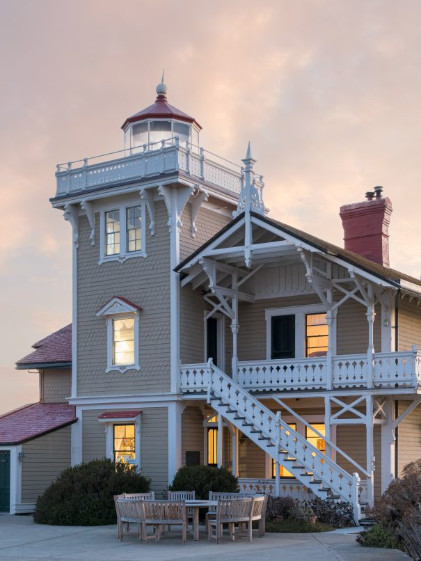
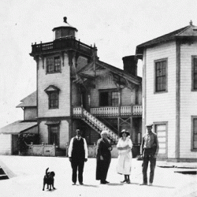
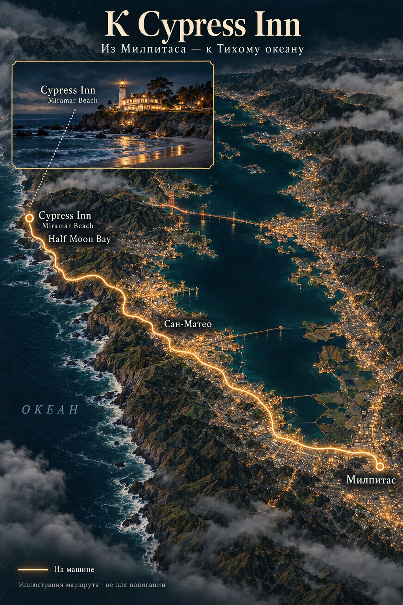

8 ОКТЯБРЯ · ДЛЯ ТЕБЯ
Катик,
налей кофе.
В свою новую кружку.
И позволь мне занять тебя
на 15 минут.
01 / ТВОЙ СВЕТ
Есть места,
в которых ты
светишься.
На краю земли. У воды.
Рядом с маяком.
Австралия, Япония, Америка…
Столько разных берегов.
И на каждом — ты.
02 / НАШИ БЕРЕГА
Катики очень
любят маяки.
03 / ЕЩЁ НЕ ВОСПОМИНАНИЕ
Катик, этот подарок —
от меня и твоей мамы.
Две отдельные ночи для нас с тобой.
Две новые истории.
Когда ты сама будешь готова.
Не нужно решать сегодня.
И даже в этом году.
Я обещаю тебе эти поездки в течение следующих пяти лет.
Это моё личное обещание — не срок действия сертификата отеля.

ПОДАРОК 01 / ОСТРОВ
У мира — берег.
У нас —
целый остров.
East Brother Light Station
БЛИЗКО К ДОМУ. ДАЛЕКО ОТ СУЕТЫ.
Тот самый маяк.
Только теперь
можно не уходить.
Катик, представь: берег понемногу отдаляется. Впереди — маленький остров, светлая башня и ночь, которую мы проведём здесь вдвоём.
Это первый из двух подарков от нас с мамой. Его дата пока не вписана.
01 / КАК МЫ ТУДА ПОПАДЁМ
Сначала дорога.
Потом — вода.
Из Милпитаса — вдоль восточного берега залива, к гавани Point San Pablo. Там оставим машину и пересядем в лодку маяка.
НА МАШИНЕ
Около часа без пробок
Из Милпитаса — к Point San Pablo Harbor. Здесь оставим машину и пересядем в лодку маяка.
Ориентировочно: с трафиком дорога может занять больше времени.НА ЛОДКЕ
Ещё около 10 минут
Берег отдаляется, а маяк становится ближе. Время отправления согласуем с хранителями — оно зависит от приливов.
МЫ ЗДЕСЬ
Теперь можно остаться
Поднимемся по лестнице с лодки на причал. Впереди — знакомство с маяком, вечер и наша ночь вдвоём.
02 / НАШ ОСТРОВНОЙ ВЕЧЕР
На целый вечер —
островитяне.
После короткой переправы остров становится нашим маленьким миром. Здесь всего пять комнат, и хранители маяка живут рядом с гостями — в том же доме, среди дерева, воды и света.
У каждой комнаты свой вид и свой характер. Можно выбрать ту, где утром первым появляется залив, или ту, где вечером зажигают камин.


Листай фотографии →
Вечер, которому
не нужен план.
Шампанское, закуски и знакомство с маяком. Хранители расскажут, как устроена станция и что здесь сохранилось с 1873 года.
Ужин из четырёх блюд с вином — вместе с другими гостями острова. Не ресторанный зал, а один общий стол в доме, где все сегодня приехали за одним и тем же: побыть у воды.
Можно выйти к ограде, посмотреть на огни по ту сторону залива и подняться к маяку. Здесь нет телевизора и музыки — только прилив, ветер и свет, который проходит по комнате.
Завтрак в девять. Вода за окном. И ещё немного времени рядом с тобой, прежде чем лодка снова отвезёт нас к берегу.
03 / СВЕТ, КОТОРЫЙ СОХРАНИЛИ
До нас здесь было
полтора века.
Он помогал морякам находить дорогу между заливами Сан-Франциско и Сан-Пабло. А однажды людям пришлось спасти сам маяк.

1873Начало истории
На острове строят маяк, чтобы помогать судам проходить через воды двух заливов. Викторианский дом и башня становятся частью этого берега.
1969Свет без смотрителя
Станцию автоматизируют. Позже историческим зданиям угрожает снос: вместо них мог остаться лишь навигационный огонь на столбе.
СегодняДом, который живёт
Некоммерческая организация и волонтёры сохраняют станцию. Доход от проживания помогает ремонтировать здания и поддерживать оборудование. Ночь здесь — маленькое участие в продолжении её истории.
ОСТРОВ ЖИВЁТ ПО ПРАВИЛАМ ВОДЫ
И всё же —
только когда спокойно.
Обратно — тоже на лодке. Шторм может задержать возвращение, а время переправы зависит от приливов. Это часть островной жизни, которую мы заранее обсудим.
При высадке нужно подняться по лестнице с лодки. Все детали уточним у хранителей перед поездкой.
Сейчас ничего решать не нужно.
Этот остров может подождать нас.
О поездке · История станции · Архив Береговой охраны

ПОДАРОК 02 / БЕРЕГ
Ночь
у океана.
Cypress Inn on Miramar Beach
Lighthouse Building · Half Moon Bay
НЕ НУЖНО НИКУДА ПЛЫТЬ
Есть маяки, которые показывают дорогу кораблям.
А есть места, где можно наконец перестать куда-то плыть.
После острова — берег. Тёплая комната, океан за окном и ночь, для которой не нужно придумывать маршрут.
01 / ДОРОГА К ОКЕАНУ
Из Милпитаса —
к Miramar Beach.
Сначала оставим за спиной залив, потом дорога начнёт спускаться к тихому побережью Half Moon Bay. И в конце вместо причала будет дверь в Lighthouse Building.

LIGHTHOUSE BUILDING
Шесть комнат.
Один океан.
Отдельный корпус Cypress Inn назван в честь маяков и мысов Калифорнии. У каждой комнаты — своё имя, камин и свой угол зрения на воду.

КОМНАТЫ У ВОДЫ


Листай кадры →
ВЕЧЕР БЕЗ РАСПИСАНИЯ
Можно просто
остаться рядом.
Газовый камин, мягкая кровать, глубокая ванна, душ и маленький холодильник. Всё, что нужно, чтобы закрыть дверь и больше никуда не торопиться.
Полноценный завтрак утром, вечерняя встреча с вином и закусками, домашние десерты и океан, который всё время остаётся за окном.
Мы можем выйти к воде, вернуться к камину, замолчать или говорить до ночи. Здесь не нужно успевать впечатлиться.
ДРУГОЙ СВЕТ
Не остров.
Не лодка.
Просто берег.
В East Brother нужно довериться воде. Здесь можно доехать, открыть дверь и услышать океан. Два подарка — две разные свободы.
И эту ночь тоже не нужно назначать сейчас. Она дождётся момента, когда тебе захочется.
04 / БЕЗ СРОКА ГОДНОСТИ
Когда
ты захочешь.
Обе эти ночи — наш с мамой подарок тебе.
На время наших поездок Эйтан
останется с бабушкой.
Но решать сегодня ничего не нужно.
Ты сама выберешь даты обеих ночей.
Когда будешь готова.
Через месяц. Через год.
Даже через пять лет.
Это моё настоящее обещание.
Оба подарка тебя дождутся.
8 ОКТЯБРЯ · ТЕБЕ 32
С днём рождения,
Катюх.
Пусть впереди будет ещё много маяков.
И времени просто быть вдвоём.
Люблю тебя.